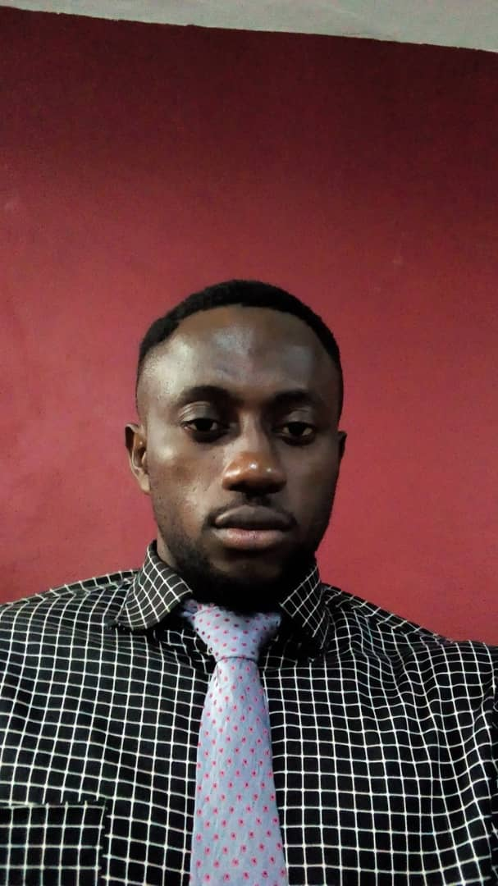

2020 à Juillet 2021(7mois):ATTACHE COMMERCIAL AU GROUPE CLIS (Environnement, Hygiène, Nettoyage & santé)
Conquérir de nouveaux clients pour atteindre le chiffre d’affaire assigné.
Fidéliser les clients existants. Faire de la veille concurrentielle pour être
force de proposition
2019 à Février 2020(4Mois) : COMMERCIAL A SOROUBAT CI
(Société de Routes et de Bâtiments)
Développer l’activité commerciale au département 100% Béton (Béton
prêt à l’emploi
2018 à Juillet 2019(1an3Mois): AGENT COMMERCIAL ET MARKETING
A KEY CONCEPT (Cabinet d’architecture et d’aménagement d’intérieur)
Définir et mettre en œuvre les stratégies marketing et commerciales,
Assurer le suivi du portefeuille clients existants, Prospecter de nouveaux
clients. Gérer les relations publiques. Animer les pages Facebook et linkedin
de l’entreprise.
2017-Mars 2018 (6mois) : RESPONSABLE PROJET/SUPERVISEUR
opérationnel et d’évènementiel)
Gérer, Coordonner et superviser en amont, pendant et en aval, toutes les
actions liées à une activation de marketing opérationnel pour des
multinationales telles que le groupe Heineken(Brassivoire), Unilever,
Friesland Campina etc.
Aout 2021-Janvier 2022:Certificat de Référent digital à FCQ AEJ/IGS
2015-2016 : Licence professionnelle Marketing Management à IFSM (Institut
de Formation Sainte Marie de Cocody/Abidjan)
2009-2010 : DEUG 2 en Sciences économiques et de gestion à l’Université de
Cocody /Abidjan
2006-2007 : BAC Série C au Lycée Scientifique de Yamoussoukro
Anglais(Moyen); Français(Bonne maitrise)
Word(Bon niveau); Excel (Bon niveau); Powerpoint (Bon niveau)
Maitre de cérémonies, Détenteur d'un permis de conduire ABCDE.
Capacité à travailler sous pression, seul et en équipe